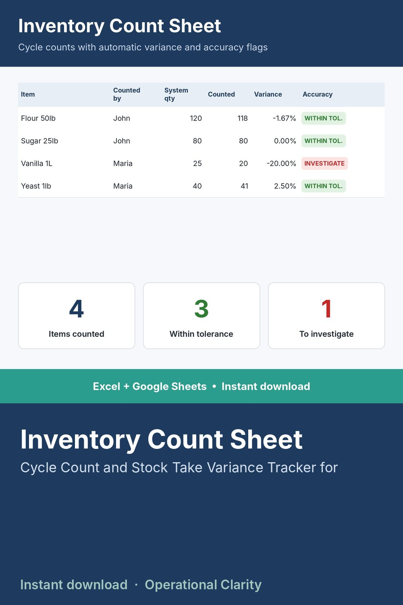

Inventory Count Sheet

CATCH SHRINKAGE AND RECEIVING ERRORS BEFORE THEY BECOME A BIG WRITE-OFF.
Built for cycle counting - counting a rotating subset of inventory regularly instead of one giant annual count. Automatically calculates the variance between what your system says you have and what you actually counted, and flags anything outside your tolerance so you investigate the right items.
WHAT IT DOES
- Item master with ABC categorization (count A-items most often, C-items least)
- Log each physical count: system quantity pulls in automatically, you enter what you counted
- Automatic variance in units and percent
- Flags anything outside your tolerance threshold as "Investigate"
- Dashboard shows total counts, accuracy rate, and net variance
WHAT'S INCLUDED
- Excel file (.xlsx) - no macros
- Start Here tab explaining cycle counting and how to use ABC categorization for a count schedule
- Sample data included with realistic bakery/food items
WHO THIS IS FOR
Food and bakery distributors, and any small business that needs a lighter-weight alternative to one massive annual physical count.
INSTANT DOWNLOAD - no physical item will be shipped. Because this is a digital product, all sales are final.